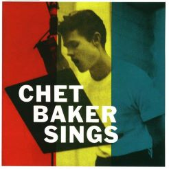
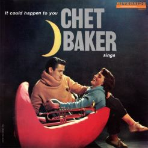
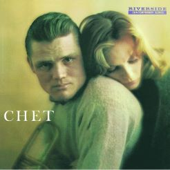

Chet Baker Sings (1954)
"Chet Baker Sings" released in 1954, is an album showcasing the vocal talents of jazz trumpeter Chet Baker. With his cool and intimate vocal style, Baker delivers a collection of jazz standards and ballads. The album is celebrated for its unique blend of Baker's distinctive trumpet playing and his understated yet emotive singing. "Chet Baker Sings" remains a classic in the jazz vocal genre, capturing the essence of Baker's cool jazz persona and contributing to his lasting influence on the music scene.

It Could Happen To You - Chet Baker Sings (1958)
"Jazz Samba Encore" is a 1963 album by saxophonist Stan Getz and guitarist Luiz Bonfá. A follow-up to their successful "Jazz Samba" collaboration, this album further explores the fusion of bossa nova and jazz. With its enchanting Brazilian rhythms and melodic improvisations, the album showcases the chemistry between Getz and Bonfá. While not as commercially successful as its predecessor, "Jazz Samba Encore" remains a charming and influential work, contributing to the popularization of bossa nova in the United States during the early 1960s.

Chet (1959)
"Chet" is a self-titled album by Chet Baker, released in 1959. This iconic jazz trumpeter and vocalist showcase his signature cool jazz style on this record. Known for his lyrical trumpet playing and intimate vocal delivery, Baker interprets a mix of standards and originals. The album features a strong lineup of musicians, including saxophonist Johnny Griffin and pianist Al Haig. "Chet" is celebrated for its emotive performances and serves as a quintessential representation of Baker's distinctive sound and musical sensitivity.